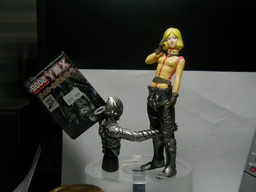
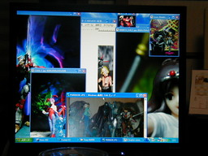
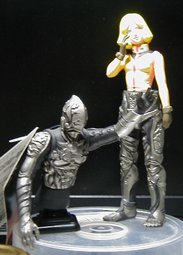

セイラ・マスにほかのおもちゃの足を付けて見る試みを兼ねて写してみました



まず、グッとひかれるものがあるフィギュアが安く売っていたので、買ってきました。何のキャラかはよくわからないのですが、すごいカッコイイのに何でこんな安いのと思いました。でも、安いせいかビニールでおおわれていませんでした。 で、その人形胴体の部分が外れるので、足のないフィギュアに付けたら面白いかなと思って試してみたところ、なんか笑えるんですが、恥をかくしてくれているようでそこにムリヤリあてはめてみました。 写真に撮ったあと GIMP で編集しました。GIMPで何枚か編集したあと、途中でエラーが出たので、しかたなく、他の絵で隠してごまかそうとしたところ、何か良さそうな感じがしたので、そのまま、他に撮りためた写真をイロイロ配置して、さらにデジカメで写したのが 2 枚目の写真です。 それ以外の元の写真には使わなかったのですが、2 枚目の写真のその他のものはいろいろなソフトを使っています。でもフィギュアの背景はいつもどおり、 Winamp の MilkDrop プラグインを WinShot したものを GIMP でアレンジした物やそのまま使った物が使われています。 ■今回 Milkdrop + WinShot を使った以外のフィギュアは次のとおりです。 ●リアルポージングロボット ビルバイン ●ナムコクロスカプコン リリス と カイ ●MIA ヤクト・ドーガの海外版 ●リトルプーリップ ラヴ バンビーニョ ●以前ご紹介したものを含めてその他いろいろです。 リンク貼るのは面倒なので、お手数ですがググって調べてください。 更新：2006-05-06 初公開：2006年05月06日 06:44:50 最新版：2006年05月06日 06:46:50 Links: GIMP: http://www.gimp.org/ MilkDrop: http://www.milkdrop.co.uk/ WinShot: http://www.woodybells.com/winshot.html